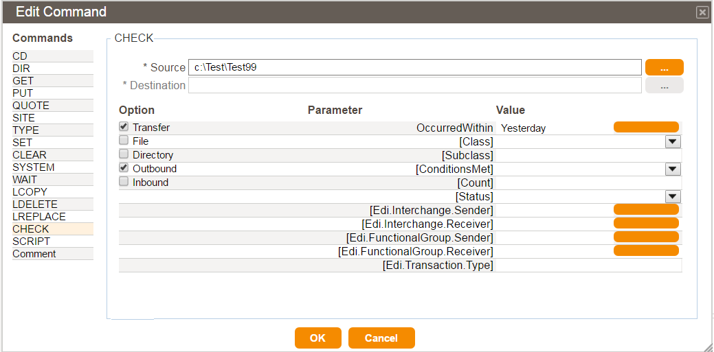
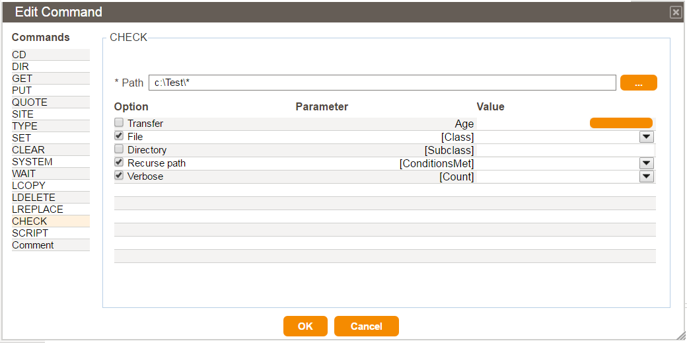

The Edit Command dialog box for the CHECK command is very similar to other command dialogs. However, because of its complexity, additional wizard dialogs are provided to aid in building a CHECK command. See also Compose an Action and Compose a Host Action
The CHECK command dialog box provides access to the many Option and Parameter settings available. They can be very powerful and can provide you with great flexibility in building your checks. For information about the Option settings, seeCHECK Command Reference. For information about Parameter settings, see CHECK Command Parameters. For all parameters, if you mouse-over the associated Value cell, you will receive a brief tool-tip help message regarding the parameter.
CHECK -TRA (transfer):

CHECK -FIL (file):

CHECK -DIR (directory):